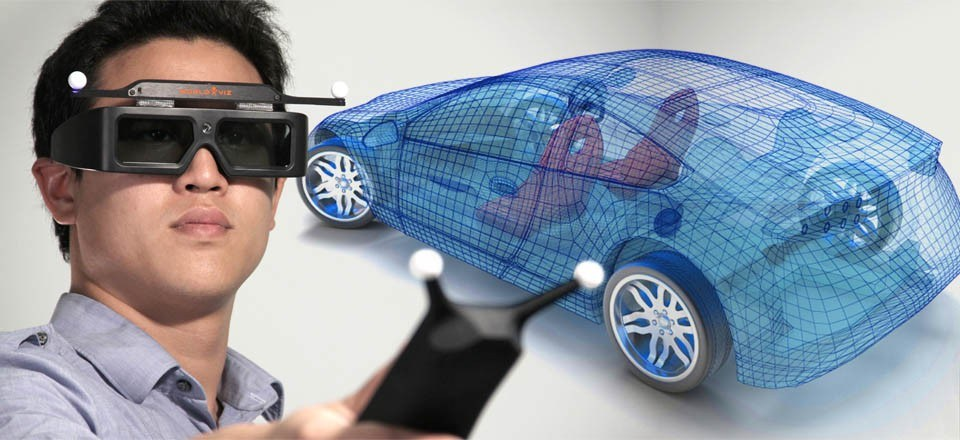

Applications
Use cases
Many people often use Augmented Reality without even noticing. Snapchat filters, Apple Memoji(iPhone X or newer), Samsung AR-Emoji, Pokemon Go, Ingress, Harry Potter Wizards Unite, Jurassic World Alive, the things you see in the football on tv are all AR applications you use all day. Some of you may even transalted text from an image or an package wit google translater "Word Lens" feature. Google Maps now has a feature where you can see the street names in real time on your phone screen or you see where you have to go on the ground infront of you. Your camera probably has a live view finder - you guessd it thats AR. With Augmented Reality you can see the Colosseum in its full beauty or you just look at paintings from all sides, even when its unfinshed. Architect use it to check if the plan matches the real surroundings.
Some companys already use Augmented Reality for marketing
Future use cases
In the future AR could replace computer screens and the windows and icons would just float infront of you in the air. You could have a lens that replaces your smartphone. Augmented reality also gives users the ability to practice different forms of social interactions with other people in a safe, risk-free environment.